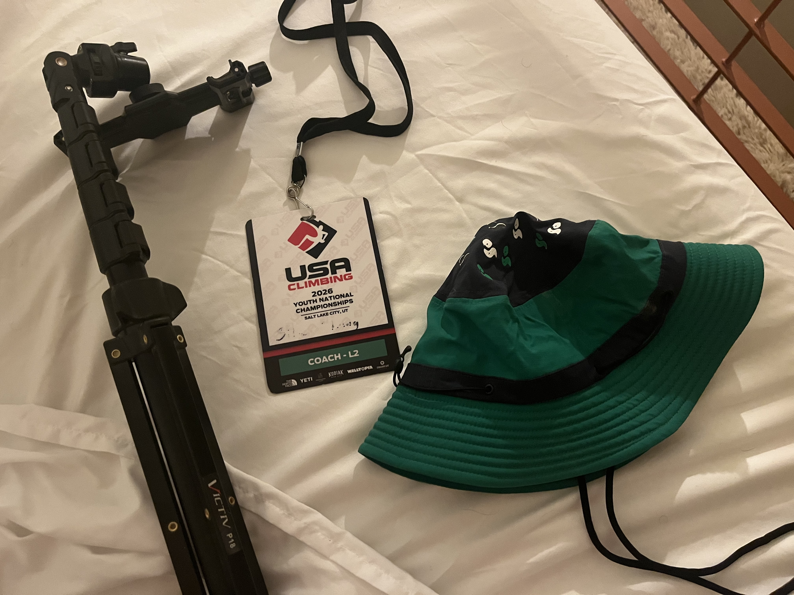
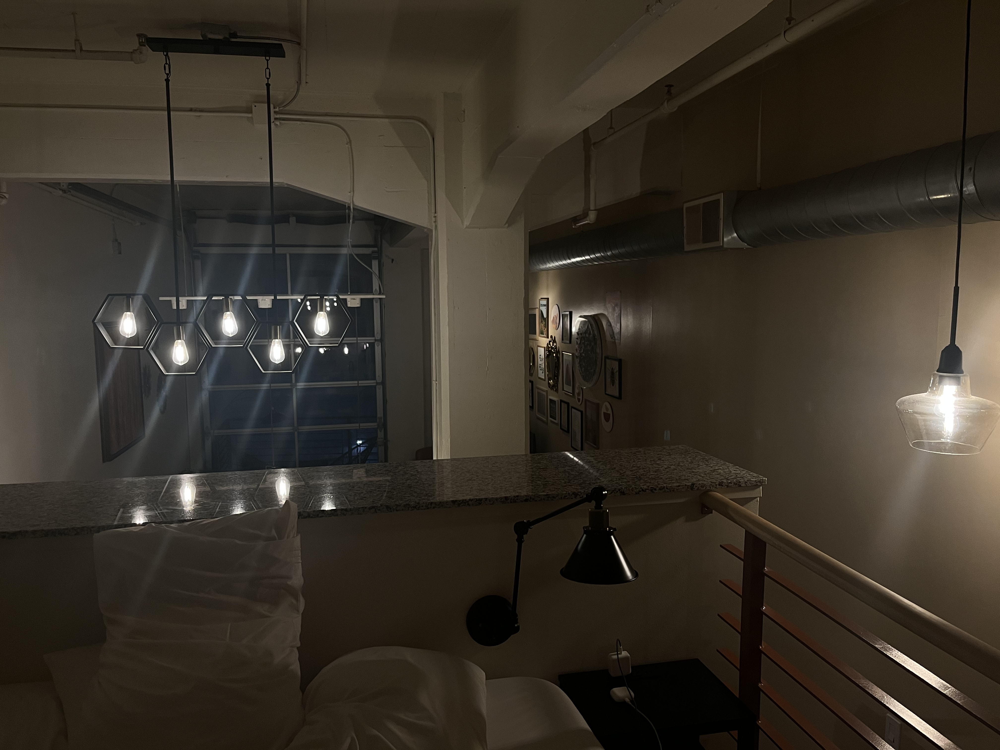

Forest
Forest
Forest
Forest
It's 10 PM, and I'm alone in loft apartment in downtown Salt Lake City. My coworkers have left me to go to a bar or do whatever extroverts do for fun after a long week of work. I turn 21 in about a month, but I really have no desire to go with them anyway. The quiet is peaceful. (Well, the relative quiet - the AC in this unit is really loud for some reason.)
We've just reached the end of a gruelling 8-day youth national championship. By many metrics, this event was a success - our team took home a third-place banner for speed climbing, and finished fifth in the overall ranking. It was the first national event for many of our climbers, and many successes were celebrated, many lessons were learned.

I'm still in the process of collecting my thoughts of the past week, but one thing is clear: this event holds much more emotional weight than I originally anticipated it would.
For starters, this is the first national event that I've coached all the way through - in the past, I've come only to support the speed discipline, but this time I came for every discipline, every category, every round. It reminded me of the exhausting weeks I had when I was an athlete competing in this event, facing each discipline back-to-back.
In addition, I got to coach this event alongside people who coached me for years. For them to task me to take care of their athletes, to invest the hundreds of dollars to get me here to Utah, to sleep on the couch so I could have the bed - I'm still a bit confused why I should deserve such trust, but their trust is extremely meaningful to me nonetheless.
I wish this AC would turn off it's still really loud...
This event also had a powerful nostalgia that I was not prepared for. We are staying across the street from the Salt Palace convention center, which was the site of my first bouldering national championship as an athlete. It was the first time I had travelled on a plane for really anything other than a family vacation. It was the first time I had ever climbed on a stage in front of a large crowd. It was the first time I met other climbers my own age from other parts of the country.
I remember running into another climber at a small waffle shop near Pioneer Park. I had finished qualifiers earlier that day in thirty-somethingth, which meant I would not be advancing to the second day of competition. My dad struck up a conversation with the other climber's mom. When we came to the topic of comp results, I remember the other boy (who was in my category) telling me that this was his first time making it out of the qualifier, and it had taken him a couple years to get here. It was comforting, to hear from a fellow competitor that improvement isn't always fast.
The AC turned off. Now I only hear the upbeat dance music from nearby clubs and bars, muffled by the glass in the window. I wonder if the other coaches are partying at one of those. I hope they're having fun.
Two years later, I would make my first bouldering semifinal, and a year after that, I would make my first bouldering final. It turns out, improvement does actually happen over time!
Two years after that, I would return to Salt Lake to compete in a speed world cup that I was woefully underprepared for. (I had received notice that I would be able to compete just three weeks before, and hand't been training.) After finishing the qualifiers near last place, me and my friends went to do a session at a local gym. We returned to Pioneer Park to watch the finals, but before the event started we visted that waffle shop. We were all a bit delerious from fatigue, and we all ordered ice cream on top of our chicken-and-waffles. I remember eating together, laughing about how good the food tasted after a day of climbing.
This week, I visited the waffle shop alone, and got take-out between competition rounds. The whipped cream was decorated to look like a chicken, with two blueberries for eyes and a strawberry slice as a beak, just like it was nine years ago, when I came here for the first time. It was bittersweet, eating the waffle, watching the competition, knowing that I'll never be that that kid on the wall at a youth comp again. (The waffle was not bittersweet. It was just sweet.)
There is a song with very intense bass playing outside. It's a little distracting.

As I reflect on the past week of competition, a few questions come to mind.
Was I helpful, effective coach to our team's athletes? Was it worth it to fly me out here?
Did the other coaches feel like I was helpful or useful?
Did the athletes I worked with find my presence comforting? Exciting? Annoying? Maybe they just felt neutrally?
Do I coach this team out of genuine care for its athletes? Or is coaching just my way of fulfilling the desire to be able to compete again, even though I'm aged out?
If my 11-year-old self at his first nationals in Salt Lake City nine years ago saw me now, would he want to grow up to be like me? Would he be surprised that I'm taller than Dad? Would he think my hair looks weird?
Nine years in the future, will I read this post and be embarassed by my sentimentality? Will I feel nostalgic? Will I remember this as a good time of my life?
None of these questions are particularly easy for me to answer. My head is starting to hurt a little bit, and the pulsing, muffled bass from outside isn't helping. I still have a bit of packing to do, and we're flying out tomorrow morning. I guess I should wrap this up.
There's not really a point or moral or thesis to this post. Really, I just sat down and realized that this moment of peace and (relative) quiet is one that I want to remember. So, this is a written archive of the state of my brain today, at this moment, at the end of the 7635th day of my life.